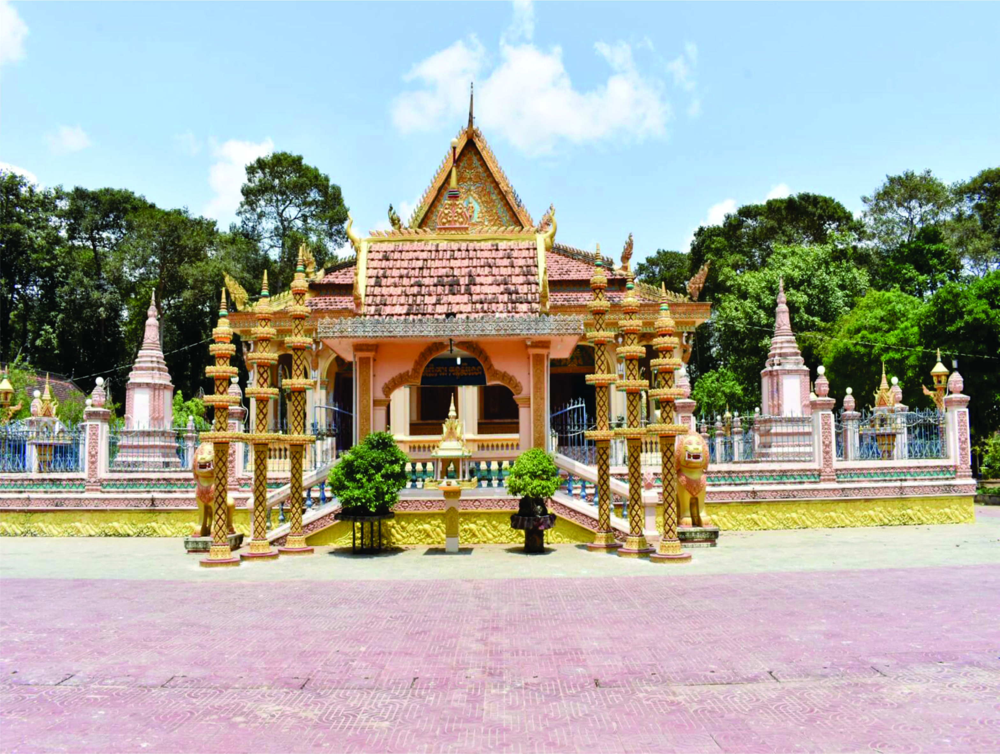
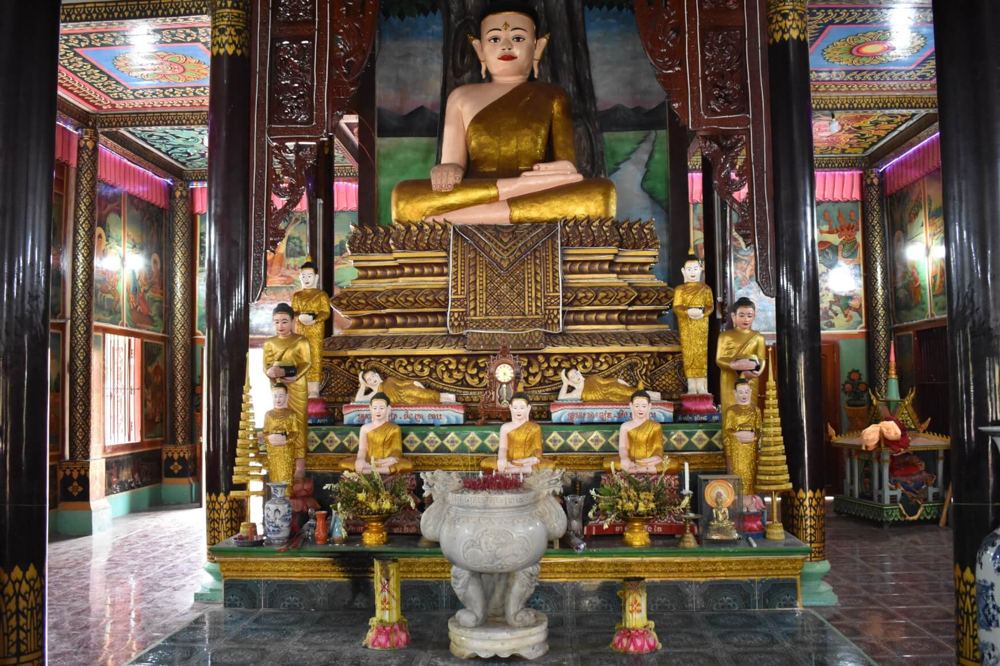

Chùa UTTAMABHIRÌRÀJAMANDIR (chùa Bà Giam) (tên gọi khác chùa Dạm, chùa Bà Dam), cách trung tâm thành phố Trà Vinh khoảng 50 km, tọa lạc tại ấp Bà Giam, xã Đôn Xuân, huyện Duyên Hải, tỉnh Trà Vinh, ngôi chùa được xây dựng lần đầu vào năm 1669, không xác định rõ vị trí, chỉ nói ở hướng Tây, đến năm 1679 dương lịch, tức năm 2223 Phật lịch thì dời lên xây dựng ở vị trí hiện nay.
Chùa Bà Giam
Từ những năm đầu thực dân Pháp chiếm đóng, sư sãi, phật tử chùa Bà Giam đã sớm tham gia phong trào yêu nước đấu tranh đòi dân sinh dân chủ. Khi cán bộ cách mạng về địa phương sư cả Thạch Tẹo đã chủ động tiếp ứng nuôi chứa cán bộ.
Từ năm 1934 đến trước khởi nghĩa Nam Kỳ năm 1940, sư cả Thạch Tẹo cùng chủ chùa Trầm Quới Hỷ (Xã Hý) tổ chức nuôi chứa và hỗ trợ các cán bộ di chuyển bí mật trong địa phương, đào những hầm trú ẩn dã chiến trong khuôn viên chùa, sử dụng trần chính điện làm nơi trú ẩn cho cán bộ, đồng thời tham gia tích cực việc thông tin liên lạc. Chùa trở thành địa điểm quan trọng giúp cán bộ nắm bắt, truyền tải các thông tin quan trọng của địa phương. Sư cả còn tích cực tuyên truyền, vận động phật tử tham gia các hội “biến chứng” như: Hội truyền bá quốc ngữ, Hội Ái hữu, Hội Nhà giàn, Hội Dù kê…. để tập hợp lực lượng yêu nước chống Pháp.
Sau Khởi nghĩa Nam Kỳ năm 1940, nhiều cán bộ bị giặt bắt bớ, lưu đày. Bọn lính ở Đôn Châu tăng cường gây lục soát, bắt người, cướp bóc tài sản của Nhân dân gây hoang mang, phẫn nộ. Lúc này, trụ trì chùa là sư cả Thạch Tẹo tập hợp bà con về chùa tuyên truyền để các phật tử có người thân đi lính vận động trả lại tài sản. Một số gia đình còn mang tài sản gửi vào chùa. Giai đoạn này sư cả Thạch Tẹo cho đào những hầm trú ẩn dã chiến trong khuôn viên chùa, sử dụng trần chính điện làm nơi trú ẩn cho cán bộ khi địch bố ráp.
Từ năm 1941-1942 sư cả Thạch Tẹo, sư cả nhì Kim Chao tích cực tuyên truyền giác ngộ cho sư sãi, phật tử tinh thần yêu nước, mở rộng mạng lưới thông tin cho cách mạng hoạt động. Ngoài ra còn vận động phật tử tích góp lúa gạo nuôi chứa cán bộ.
Đầu năm 1946, chuẩn bị cho Tổng tuyển cử bầu Quốc hội đầu tiên của nước Việt Nam dân chủ cộng hòa ngày 06/01/1946, kẻ thù ra sức xuyên tạc, quấy phá bằng nhiều thủ đoạn để Nhân dân mất niềm tin vào cách mạng, cả nhì Kim Chao đã giải thích cho sư sãi, bà con phật tử hiểu được âm mưu của địch, hăng hái tham gia bầu cử, góp phần làm cho cuộc bầu cử Quốc hội thành công.
Hưởng ứng lời kêu gọi Toàn quốc kháng chiến (19/12/1946), sư sãi, phật tử chùa Bà Giam tham gia cùng lực lượng các xã biểu tình, mít tinh góp phần giải phóng hoàn toàn huyện Trà Cú vào ngày 31/12/1946.
Sau khi Pháp trở lại xâm lược cho đến trước năm 1954, chùa Bà Giam không chỉ là nơi hội họp bàn bạc kế hoạch, nơi khởi phát các phong trào đấu tranh chính trị mà còn đóng góp lương thực cho cách mạng cùng góp phần xây dựng một đội ngũ chính trị, làm chỗ dựa vững chắc cách mạng.
Trong giai đoạn này Nhà chùa đã nuôi chứa cán bộ: Sơn Cơ, Thạch Chân, Thạch Tốt, Thạch Sốc, Thạch Ngọc Minh, Thạch Thị Cộng, Kim Thị Thônl, Sơn Giáp, Thạch Rộn, Thạch Sơ…Cũng trong thời gian này chùa còn là nơi tập hợp thanh niên trốn lính từ các địa ấp, xã trong vùng vào tu hành chống bắt lính. Nhà chùa cũng mở lớp dạy chữ Pali, chữ Khmer xóa mù chữ cho người trưởng thành, thanh niên, trẻ em. Sư cả Kim Chao còn phổ biến kinh nghiệm đối phó với địch đến các chùa Ba Trạch, Nô Đùng (xã Tân Hiệp), Trà Tro (xã Hàm Giang), Trà Kha (xã Đại An), Trà Côn, Cái Cối (xã Long Vĩnh)…
Hưởng ứng phong trào Đồng khởi 1960, sư cả Kim Chao chỉ đạo sư sãi và phật tử chuẩn bị trống, mõ, chiêng, gậy gộc, giáo mác cùng rầm rập xuống đường kéo đến trụ sở ấp, xã kêu gọi địch buôn vũ khí đầu hàng đã đóng góp một phần cho thắng lợi ở địa phương, góp phần chung cho huyện, tỉnh đánh bại chiến lược “chiến tranh đơn phương” quốc sách “tố cộng, diệt cộng”.
Trong giai đoạn “Chiến tranh đặc biệt”, được sự hỗ trợ của tỉnh, Ban Sãi vận tỉnh, thông qua các tổ chức cơ sở, Đôn Châu đã tập hợp được 900 sư sãi, quần chúng trong đó có sư sãi, phật tử chùa Bà Giam tham gia cuộc đấu tranh liên tục trong ba ngày 15,16, 17/3/1961 tại trung tâm tỉnh lỵ Vĩnh Bình với hơn 56.000 người của các huyện trong tỉnh. Cuộc biểu tình đã làm cho địch hoang mang lo sợ, buộc tên tỉnh trưởng Vĩnh Bình phải nhượng bộ hứa giải quyết yêu sách. Cuộc biểu tình đã tạo tiếng vang lớn cổ vũ mạnh mẽ phong trào đấu tranh sau này.
Trong giai đoạn “Chiến tranh cục bộ” địch thực hiện nhiệm vụ “tìm diệt”, “bình định” chiếm đóng, kìm kẹp, bắn phá, cướp bóc…hòng giành lại ưu thế trên chiến trường. Trước thủ đoạn của địch, ở xã Đôn Châu ta đã chỉ đạo sư sãi các chùa đấu tranh chống bắt sư sãi và thanh niên đi lính. Tại chùa Bà Giam sư cả Kim Chao kêu gọi thanh niên vào chùa tu, kêu bà con phật tử đem của cải vào chùa gửi; vận động phòng vệ dân sự, thanh niên chiến đấu và chủ ấp giác ngộ, ủng hộ cách mạng.
Chùa Bà Giam
Hưởng ứng chiến dịch Hồ Chí Minh lịch sử năm 1975, sư cả Kim Chao vận động phật tử trong ấp gói gần 200 đòn bánh tét, làm lương khô, chuẩn bị nước uống, thuốc men phục vụ chiến dịch và tham gia biểu tình, biểu tình thị uy cùng với quần chúng Kinh – Hoa và sư sãi 7 chùa Khmer đã góp phần vào công cuộc giải phóng miền Nam thống nhất đất nước vào ngày 30/4/1975.
Trong kháng chiến chùa Bà Giam đã nuôi chứa bảo vệ nhiều cán bộ cách mạng như: Ma ha Sơn Thông, Trần Lái, Thạch Minh Mẫn, Diệp Tấn Mẫu, Sơn Cơ, Thạch Nhoẹn Nhựm, Thạch Voi, Thạch Chân, Kim Phanh, Nguyễn Văn Thôi, Lê Phát Nhiều, Tăng Kim Xương, Trần Văn Hiệp, Phạm Văn Tư, Thạch Chịa, Võ Văn Thực, Tăng Côi, Tăng Văn Hổ, Thạch Thị Cộng, Kim Thị Thônl, Sơn Giáp, Thạch Rộn, Thạch Sơ, Thị Pha, Thạch Vọng, Thạch Cala, Kim Rene, Thạch Vây, Tăng Bêne, Thạch Pụm, Thạch Khême, Thạch Gặng, Huỳnh Sone…Nhiều sư sãi của chùa sau khi hoàn tục đã tham gia kháng chiến tiêu biểu như: Phan Sun, Kiên Quươn, Thạch Chương, Thạch Muôn, Thạch Thạnh, Thái Chợt, Sơn Điêu, Trầm Chòi, Kim Ngãi, Sơn Vọng, Lâm Thanh, Thạch Pa, Thạch Cơn.
Nhiều vị sư sãi sau khi hoàn tục tiếp tục hoạt động cách mạng và đã anh dũng hy sinh, tiêu biểu như: Thạch Mốc, Thạch Kene, Thạch Rộng, Thạch Sơ, Thạch Thảo, Thạch Chè, Thạch Done, Thạch Lem, Thạch Bươu, Thạch Xót…
Ngày 31/12/2020, Ủy ban nhân dân tỉnh Trà Vinh đã ra Quyết định số 4100/QĐ-UBND công nhận chùa Bà Giam là di tích lịch sử cấp tỉnh.